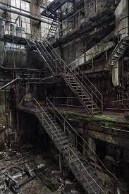
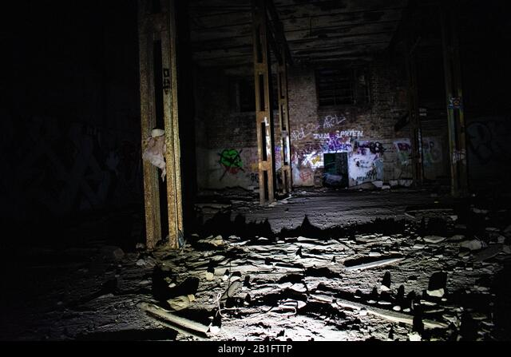
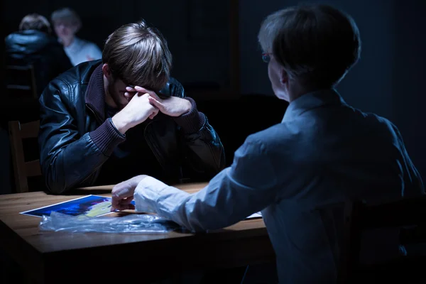
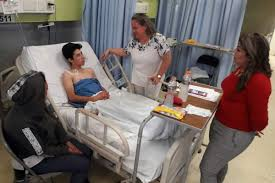

El Reto
Una luz de interrogatorio se enciende en la habitación. Juan intenta bloquear la luz con las manos. Se escucha un click. Una voz rasposa y con aire de autoridad empieza la charla:
—“Esta conversación está siendo grabada.” Silencio.
—“Bueno, antes que nada me presento soy el Oficial Lopez. Usted está aquí para presentar su versión de los hechos por lo sucedido en la propiedad ubicada sobre la ruta 9 kilómetro 140 a las afueras de la ciudad de Concepción, Tucumán. Se lo ha imputado por varios crímenes entre los que se encuentran: violación de propiedad privada, robo, dañosa la propiedad privada y homicidio. Tiene derecho a guardar silencio y pedir la representación de un abogado.”
Juan toma aire. Responde:
—“Voy a hablar, necesitan saber todo lo que pasó allí adentro. Soy Juan Fernando Campos.”
—“¿DNI 45-3-84-2-6-2?”
—“Si, es ese. Tengo 23 años. Ese sábado estaba con mi amigo Matías. Lo conozco de toda la vida. Era un poco más alto que yo. Siempre nos hacíamos bromas y retos, ya sabe, dejarnos valdes de agua sobre puertas medio abiertas, enredarle al otro los cordones, publicar en los grupos de wpp que gustaba de tal o tal chica. Una vez lo reté a pintar un grafiti en el auto del director de la escuela. Puede ser que nos hayamos pasado un par de veces con lo que hacíamos, pero era divertido, y lográbamos muchas reproducciones en youtube y tiktok. Así el sábado pasado me reto a entrar a un lugar. Una vieja fábrica abandonada, cerrada porque habían muerto unos obreros hace un par de años…”
Decides Aceptar el reto. Decides no aceptarloTemblando continúa:
—“Le dije que no a pesar de que me dijera de todo. Ese día a la noche me mandó por wpp un video donde me mostraba cómo entraba a la fábrica. ‘Rayos, el desgraciado se mandó’ pensé. Salí derecho hacia allí. Salté una verja y ví el candado de la puerta principal cortado. Cuando entré a buscarlo lo ví tirado en el piso.”
 Continúa...
Continúa...
—“Me empezó a decir de todo. Que era una gallina, que no tenía h*evos, que era p*to, c*gón. Al final terminé aceptando, total, no iba a pasar nada.
A la noche estábamos en el lugar. Saltamos un alambrado y fuimos a la puerta del frente. Estaba cerrada con una cadena herrumbrada y un candado en peor estado incluso. Si le dábamos un masazo de seguro la abríamos. Pero teníamos unas pinzas en la mochila, así que las usamos. La cadena cayó y las puertas se abrieron chirriando. Encendimos un par de linternas y entramos. Un lugar total y absolutamente abandonado. No se habían molestado ni en sacar las máquinas del lugar. Todo lleno de polvo, telarañas, herrumbre, tierra. Un olor a metal, aceite y m*erda de todo se sentía. Empezamos a caminar por el lugar hasta que llegamos a una escalera que estaba al fondo. Subiendo por ella, a cada paso nos respondía con algún crujido o rechineo. ‘Vámonos’ le decía a mi amigo, ‘nos vamos a matar subiendo esto’. No me escuchó y siguió adelante. Casi nos caemos un par de veces. Arriba había todo un sistema de andamios de metal. Todo en las mismas penosas condiciones. Era dar un paso, crujido del techo, pared, andamio. Hasta que pasó lo que tenía que pasar supongo.
Matías estaba unos metros al frente y se cayó el sector del andamio donde estaba. El sonido fue fuertísimo. Yo me paralicé, entre en shock. Mi amigo se había caído varios metros hacia el piso. Tarde varios segundos en reaccionar. Se sintieron como si fueran horas. Bueno, un grito de dolor me sacó del trance. Tenía que llegar abajo de alguna forma. Miré hacia abajo y se me cayó la linterna al vacío. Era muy alto. Saqué mi celular para usar la linterna porque me quedé a obscuras, salvo por la luz de las linternas que habían quedado en la planta baja…
 ¿Decides correr hacia abajo? ¿O decides ir con ciudadO?Me di la vuelta con mucho cuidado y de a poco iba acomodando un pie adelante del otro para moverme. No quería que se caiga más la estructura. Todo crujía y se tambaleaba de lado a lado. Como amenazando con soltarse en cualquier momento. Otra eternidad parecía sucederse frente a mis ojos. Recé para llegar a tiempo con mi amigo y ayudarlo. Sentí miedo, escalofríos, por Dios, estaba llorando. Quería estar en casa, quería nunca haber aceptado este reto.
Al final llegué a la escalera del comienzo y ahí…”
 Continúa...En este punto rompe en llantos. El oficial le da un pañuelo.
—“Por favor, continúe.”
Entre lágrimas:
—“Si, lo ví allí en el piso. Me acerqué lento hasta que lo escuché pedir ayuda. Por la obscuridad no lo había visto bien. Me acerqué más y estaba con una pierna partida y un tubo clavado a un lado. Me desesperé. Le pregunté ‘¿Qué pasó? ¿Estás bien?’. ‘Me caí’ me decía, ‘solo me caí’ decía. Oh Dios fue un horror, estaba muy mal. Llamé a una ambulancia pero cuando llegó ya se había muerto…”
Silencio.
—“Bueno terminamos la grabación aquí. Muchas gracias por presentarse. Lo estaremos llamando para ver cómo continúa la investigación.”
 ¿Quieres volver a intentarlo?Fui corriendo por los andamios. Me arrepiento siempre de esto. No pude hacer ni unos tres pasos y se soltó todo el sector en donde estaba. Sentí un frío recorrer la espalda. Otro sonido tremendo y un golpe en la cabeza. Luego de eso, todo negro.
Me levanté al día siguiente en el hospital. Unos vecinos de la finca de al lado habían llamado a la policía por todo el ruido. Cuando los policías llegaron encontraron a Matías muerto. A mí me llevaron al hospital más cercano. Me fracturé las dos piernas y un par de costillas por la caída…”—
Juan estaba al borde del llanto.
— Perfecto, está todo grabado. Gracias por presentar su versión de los hechos. Lo pueden retirar. —
El oficial le hace una seña a un guardia para que dejen entrar a la madre. Una mujer de unos cincuenta y tantos años entra y retira a Juan que estaba en sillas de ruedas. Por lo bajo le susurra que todo saldrá bien…
 ¿quieres volver a intentarlo?Sobre el Autor
María Rosa del Carmen
Nació en la ciudad de Córdoba Capital el 2 de Abril de 1985. Se recibió de escritora en la facultad de Letras y Ciencias Sociales de la Univercidad Nacional de Córdoba. Actualmente escribe semanalmente en la revista provincial "Los Cuentos del Horror".